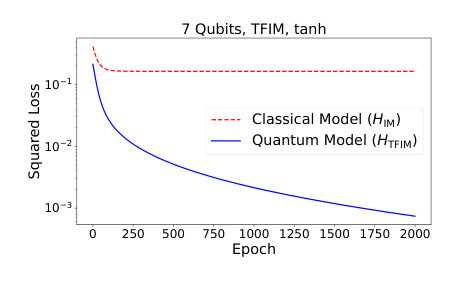
← Index · ← Previous · Next →
Authors: Alexander He, Nana Liu, Mark M. Wilde
Type: theory · Category: disordered systems and neural networks · PDF: https://arxiv.org/pdf/2607.05000v1
Analysis basis: full PDF text, analyzed in chunks
Topic relevance: quantum measurements 1/5

Summary. This work establishes canonical quantization as a systematic method to build quantum machine learning components by quantizing classical neurons. By mapping the energy function to a Hamiltonian observable, they develop hybrid algorithms to train these 'quantized neurons.' The results show that this quantum approach enhances the expressive power of the resulting neural architectures.
Why it may be interesting. It bridges fundamental quantum mechanical concepts (quantization, observables) directly into the structure of artificial neural networks, providing a physical interpretation and potential computational advantage for ML models.
Main problem. The paper applies canonical quantization, a physical procedure, to construct quantum models for machine learning primitives like neurons.
Main result. Quantized neurons exhibit enhanced expressive capabilities compared to their classical counterparts on representative function approximation tasks.
Method. Hybrid quantum-classical algorithms are developed for training and evaluation, relying on techniques like Hamiltonian simulation and Hadamard tests to estimate gradients and measure observables.
Model / system. The model quantizes a classical neuron defined by an energy/Hamiltonian $H( heta)$ and an activation function $\varphi$. The input variables are promoted to non-commuting Pauli operators ($\sigma^Z$).
Key observables. The primary observable is the quantum activation observable, $\varphi(H( heta))$, whose expectation value is measured on the input state $ ho$.
Important parameters / regimes. Temperature parameter $T$ (for the hyperbolic tangent activation function), and the Hamiltonian parameters $ heta$ defining the interaction strength.
Assumptions / limitations. The approach assumes that canonical quantization provides a principled framework for building quantum ML primitives, and it relies on basic quantum simulation techniques being available.
Figures summary. Figure 3 compares the training performance (Squared Loss) of noncommuting Hamiltonians ($H_{ ext{TFIM}}$) versus commuting ones ($H_{ ext{IM}}$), showing superior performance for the former.
Paper structure. The paper first introduces quantizing a classical neuron model by replacing the energy function with a Hamiltonian and applying functional calculus to get an observable. It then develops HQC algorithms for training, followed by numerical experiments comparing different types of Hamiltonians on learning tasks.
Canonical quantization provides a systematic procedure for constructing quantum models from classical Hamiltonians. Here, we apply this principle to a fundamental computational primitive of machine learning: the neuron. Specifically, by viewing a neuron as a composition of an energy function and an activation function, we quantize this model by replacing the energy function with a quantum Hamiltonian and applying the activation function to it through matrix functional calculus. This results in an activation observable that can be measured on an input quantum state. We investigate the use of these quantized neurons for function approximation, where the objective is to learn an unknown observable from labeled quantum data. For this purpose, we develop hybrid quantum-classical algorithms for training and evaluation, including procedures for measuring the activation observable and estimating gradients of the squared loss error. Our algorithms for gradient estimation rely on basic primitives like classical random sampling, the Hadamard test, and Hamiltonian simulation, and those for measuring an activation observable rely on quantum algorithms known as the power of one qumode and Schroedingerization. Numerical experiments demonstrate that our quantized neurons exhibit enhanced expressive capabilities relative to corresponding classical neurons on representative learning tasks. Our work establishes canonical quantization as a principled framework for constructing quantum machine learning primitives and provides a foundation for developing neural architectures tailored to quantum data.
Authors: Soo-Jong Rey
Type: theory · Category: other · PDF: https://arxiv.org/pdf/2607.05385v1
Analysis basis: full PDF text, analyzed in chunks
Topic relevance: Keldysh / 2PI / non-Gaussian methods 1/5
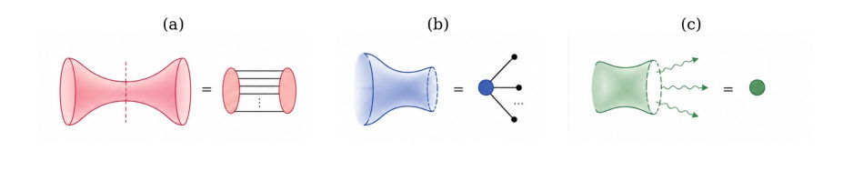

Summary. This paper constructs the partition function for a Type-IIB axion--dilaton wormhole using charge-sector data. It develops a sophisticated mathematical framework to analyze this function via its $ heta$-expansion coefficients. The core contribution is establishing necessary and sufficient conditions—such as positivity or symmetry—that these coefficients must satisfy to correspond to physically meaningful quantities.
Why it may be interesting. While highly theoretical, the rigorous development of coefficient constraints (like moment positivity or Cauchy-Schwarz inequalities) provides powerful mathematical tools for characterizing physical theories where observables are represented by Fourier series expansions, which has parallels in quantum field theory and statistical physics.
Main problem. The primary goal is constructing the Type-IIB axion--dilaton wormhole partition function, Z_wh(theta; b), entirely from underlying charge-sector data.
Main result. The paper establishes a rigorous mathematical framework detailing how physical constraints (like positivity or symmetry) on the coefficient sequence dictate the nature of the theta expansion, connecting it to known statistical distributions like Bessel/Skellam laws.
Method. The method involves deriving coefficients from long-distance saddle point calculations in supergravity, followed by a reduction procedure that maps these matrix elements into scalar coefficients forming a Fourier series representation for Z_wh.
Model / system. The system is the Type-IIB axion--dilaton wormhole geometry within string theory. The mathematical structure involves an integer charge lattice ($ u \in \mathbb{Z}$) and a compact Fourier variable $ heta$ conjugate to this charge.
Key observables. Wormhole partition function $Z_{wh}( heta; b)$, reduced scalar coefficients $W_{ u}[b]$, and the absolute convergence bound $Z_{abs}[b]$.
Important parameters / regimes. The axion charge $ u$, the compact Fourier variable $ heta$, and the reduction data $b$. The analysis explores limits like the dilute Bessel/Skellam limit.
Assumptions / limitations. The calculation relies on a controlled semiclassical input derived from supergravity functional integrals, and the final physical interpretation depends on imposing positivity or symmetry constraints on the coefficients.
Figures summary. Figure 1 illustrates the geometric objects involved (two-ended throat, neck-cut geometry) alongside the two-end operator term coefficient matrix $C_{ij}^{ u}$. Figure 2 maps the calculation flow from $C_{ij}^{ u}$ to $W_{ u}[b]$ and finally to $Z_{wh}( heta; b)$.
Paper structure. The paper follows a hierarchical structure: first, defining the charge-sector coefficient matrix ($C_{ij}^ u$); second, applying reduction data ($b$) to obtain scalar coefficients ($W_ u[b]$); third, forming the partition function via Fourier summation ($\sum W_{ u}[b]e^{i u heta}$); and finally, analyzing mathematical constraints (positivity, symmetry) on these coefficients.
I construct the Type-IIB axion--dilaton wormhole partition function from charge-sector data. In a chosen axion charge, equivalently form-field flux sector, the long-distance saddle calculation supplies a two-end operator term with coefficient matrix \(C^{ij}_ν\). The labels \(i,j\) label end-insertion operators; the labels \(A,B\) label parent universes. Reduction data \(b\) convert this matrix into scalar coefficients \(W_ν[b]\). The wormhole partition function in the theta variable is \(Z_{\rm wh}(θ;b)=\sum_νW_ν[b]\e^{iνθ}\). I analyze properties and constraints this coefficients satisfy: discrete-symmetry covariance, phase, absolute bounds, moment positivity, Cauchy--Schwarz inequalities for the unreduced coefficient matrix, complex-\(θ\) domains, charge-lattice tails, and the dilute Bessel/Skellam limit. The \(θ\)-dependence of the wormhole partition function is the Fourier transform of the charge-sector scalar coefficients.
Authors: Sebastien Junier, Celine Barreteau, David Berardan, Yann-Andrev Kerneur, Jean-Claude Crivello
Type: theory · Category: disordered systems and neural networks · PDF: https://arxiv.org/pdf/2607.04502v1
Analysis basis: full PDF text, analyzed in chunks
Topic relevance: methods for driven-dissipative 1/5
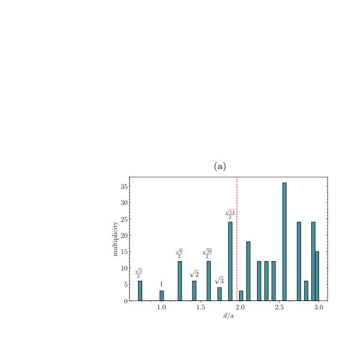
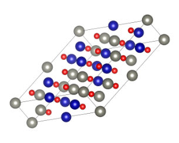
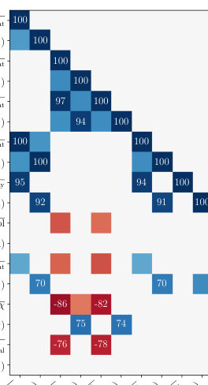
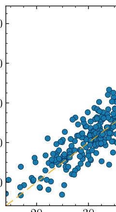
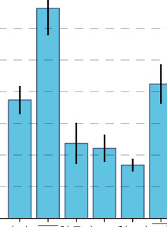
Summary. This work presents a data-driven computational framework to explore Entropy-Stabilized Oxides by combining DFT calculations, SQS modeling of disorder, and supervised machine learning. The method efficiently screens thousands of potential oxide compositions to predict their thermodynamic stability relative to competing phases. This establishes an efficient route for the materials discovery process in complex solid-state chemistry.
Why it may be interesting. While focused on materials science, the core methodology—combining high-dimensional physical simulation (DFT/SQS) with advanced machine learning for predictive screening in complex parameter spaces—is highly relevant to developing ML potentials or predicting quantum phases in strongly correlated systems.
Main problem. The challenge of identifying stable, promising candidates within the vast compositional space of Entropy-Stabilized Oxides (ESOs) due to complex phase stability assessment.
Main result. A high-throughput computational framework was developed that efficiently screens thousands of quinary ESO compositions using machine learning predictions, requiring explicit DFT calculations for only about 10% of the systems tested.
Method. The approach combines Density Functional Theory (DFT) with Special Quasirandom Structures (SQS) to model disorder, and then trains supervised machine learning models (like MLP) on these results to predict thermodynamic stability metrics.
Model / system. The study focuses on equimolar quinary ESOs in the NaCl structure type, involving 16 selected cation species. Stability is assessed by calculating the formation enthalpy relative to the convex hull ($\Delta ext{hull}H$) and determining a finite-temperature stabilization point ($T_{ ext{stab}}$).
Key observables. Formation enthalpy ($\Delta fH$), distance to the convex hull ($\Delta ext{hull}H$), and stabilization temperature ($T_{ ext{stab}}$).
Important parameters / regimes. The system size involves 4368 possible quinary compositions; ML models achieve a test error of $\sim 4 ext{ kJ}\cdot ext{mol}^{-1}$.
Assumptions / limitations. Absolute stabilization temperatures are affected by systematic thermodynamic approximations, and the method relies on extrapolations from smaller systems.
Figures summary. Figures illustrate SQS modeling (pair cluster distribution), ML model performance curves (prediction vs. learning), and tables list predicted stability trends for various quinary compositions.
Paper structure. The paper systematically builds a reference database using DFT/SQS, develops thermodynamic criteria ($\Delta fH$, $\Delta ext{hull}G$), trains supervised ML models on this data, and applies the resulting framework to screen large compositional spaces.
Entropy-stabilized oxides (ESOs) open access to vast multicomponent compositional spaces, but identifying promising candidates remains challenging because of the large number of possible mixtures and the need to assess their stability against competing phases. In this work, we develop a high-throughput computational framework to screen equimolar quinary ESOs in the NaCl structure type by combining density functional theory (DFT), special quasirandom structures (SQS), convex-hull thermodynamics, and supervised machine learning. A consistent reference database of binary and ternary ordered oxides, including disordered phases such as all binary cation combinations in the NaCl-type oxide, is first constructed using GGA and meta-GGA calculations. Quinary disordered phases are then described by SQS supercells and used to train machine-learning models that predict the distance to the convex hull and the corresponding stabilization temperature over the full set of 4368 possible equimolar quinary compositions generated from 16 cation species. Among the tested models, an optimized multilayer perceptron provides the best predictive performance, with a test error of about 4 kJ/mol, while requiring explicit DFT calculations for only about 10% of the quinary systems. Comparison with experimental synthesis tests and computed decomposition paths further shows that the approach captures the main stability trends and the dominant competing phases, although absolute stabilization temperatures remain affected by systematic thermodynamic approximations. These results establish an efficient route for the data-driven exploration of multicomponent oxides and provide practical guidance for the experimental search for new ESOs.
Authors: Urban Vernik, Pepijn Demol, Thomas Duguet, Alexander Tichai
Type: theory · Category: other · PDF: https://arxiv.org/pdf/2607.05086v1
Analysis basis: full PDF text, analyzed in chunks
Topic relevance: Keldysh / 2PI / non-Gaussian methods 1/5

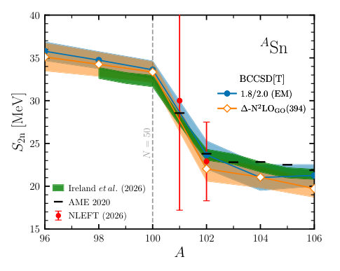

Summary. This paper calculates the binding energies of tin isotopes near the neutron drip line using advanced ab initio methods based on chiral Effective Field Theory. By employing the BCCSD[T] approximation, the authors achieve high precision and map out trends in nuclear structure, highlighting discrepancies between theoretical models and experimental constraints.
Why it may be interesting. While focused on nuclear physics, the rigorous application of many-body perturbation theory techniques like Coupled Cluster methods for calculating ground state properties is a highly sophisticated theoretical tool relevant to strongly correlated quantum systems in general.
Main problem. To perform high-precision calculations of nuclear binding energies for tin isotopes across the neutron drip line.
Main result. The BCCSD[T] approach significantly reduces many-body uncertainty, showing sensitivity in predicting the drip-line location compared to Energy Density Functional models.
Method. Bogoliubov Coupled-Cluster (BCC) theory, extended to include leading triples corrections (BCCSD[T]), is used to solve the many-body Schrödinger equation.
Model / system. The study focuses on even-even Tin isotopes ($ ext{Sn}$) ranging from $N=50$ towards the neutron dripline. Calculations utilize chiral Effective Field Theory ($\chi ext{EFT}$) two- and three-nucleon interactions within the BCC framework.
Key observables. Binding energies ($E_0$) and two-neutron separation energies ($S_{2n}$).
Important parameters / regimes. The calculation uses a one-body spherical harmonic oscillator basis ($\hbar\omega = 12 ext{ MeV}$) and incorporates interactions up to the three-nucleon level.
Assumptions / limitations. Approximations are made in solving the cluster amplitudes, notably using the non-iterative BCCSD[T] method, which introduces systematic uncertainties.
Figures summary. Figure 1 compares ground-state energies ($E_0$) for $ ext{Sn}$ isotopes using BCCSD and BCCSD[T] against VS-IMSRG results. Figure 2 shows $S_{2n}$ around the $N=50$ shell closure.
Paper structure. The paper details the theoretical framework (BCC theory, Hamiltonian formulation), presents the systematic improvement achieved by including triples corrections (BCCSD[T]), and compares resulting binding energies and separation energies across the isotopic chain to experimental data and other advanced calculations.
The location of the neutron drip line in tin isotopes has important consequences for our fundamental understanding of nuclear structure and nuclear forces as well as for astrophysical nucleosynthesis. Performing high-precision ab initio calculations of even-even tin isotopes from $N=50$ to $N=126$ based on chiral two- and three-nucleon interactions, the predicted drip-line location is found to be highly sensitive to the employed nuclear interactions and to exhibit tension with recent energy-density-functional predictions. On the neutron-deficient side, results are consistent with extrapolated two-neutron separation energies constrained by recent Penning-trap mass measurements.
Authors: Ripunjay Dwivedi, Manus R. Visser
Type: theory · Category: statistical mechanics · PDF: https://arxiv.org/pdf/2607.03749v1
Analysis basis: full PDF text, analyzed in chunks
Topic relevance: non-equilibrium dynamics 1/5
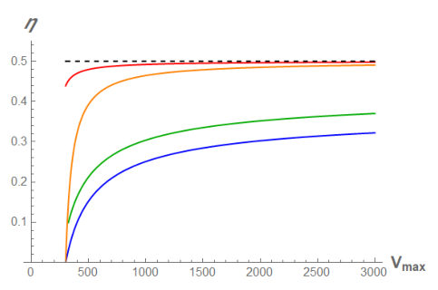
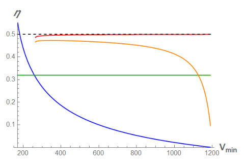


Summary. This work develops a model for reversible heat engines powered by Schwarzschild black holes using quasi-local gravitational thermodynamics. By treating the boundary as a thermal system, the authors calculate efficiencies for various cycles, demonstrating that the regenerated Stirling efficiency approaches the Carnot limit from below at high temperatures. This provides a novel diagnostic tool linking general relativity to classical thermodynamic limits.
Why it may be interesting. While focused on gravity, the rigorous application of classical thermodynamics principles (Carnot/Stirling cycles) to a non-standard working substance provides an advanced theoretical framework for understanding energy conversion in extreme physical systems.
Main problem. The paper constructs and analyzes reversible heat engines operating using a holographic model derived from Schwarzschild black holes.
Main result. It derives efficiencies for standard heat engines (Carnot, Otto, etc.) showing that the regenerated Stirling efficiency approaches the Carnot bound from below in the high-temperature limit.
Method. The analysis uses quasi-local gravitational thermodynamics applied to a black hole enclosed in a cavity, treating the boundary as the working substance.
Model / system. The system models a Schwarzschild black hole contained within a finite spherical cavity. The thermodynamic properties of the dual thermal system on the cavity boundary are used to define the heat engine cycles.
Key observables. Efficiencies ($\eta$) for Carnot, Otto, Diesel, Brayton, and Stirling engines; quasi-local equations of state ($E(S, V)$); regenerated Stirling efficiency ($\eta_{ ext{reg}}^{ ext{Stirling}}$).
Important parameters / regimes. Temperature ratio ($T_c/T_h$); large black hole branch restriction ($0 < x < 1$); high-temperature limit ($T_h o \infty$).
Assumptions / limitations. The analysis is restricted to the stable, large black hole branch; heat rejection is modeled as controlled quasi-static extraction via Hawking radiation.
Paper structure. The paper systematically derives thermodynamic relations for various strokes (isochoric, adiabatic, isobaric, isothermal) before applying these concepts to calculate the efficiencies of standard idealized heat engines and analyzing the high-temperature limits.
We construct reversible black hole heat engines in asymptotically flat spacetime using quasi-local gravitational thermodynamics. We enclose a Schwarzschild black hole in a finite spherical cavity and identify the working substance with the dual thermal system on the cavity boundary. The surface pressure and boundary area define a thermodynamic pressure-volume pair in the dual system, while all coupling constants of the gravitational theory remain fixed. We derive exact efficiencies for the Carnot, Otto, Diesel, Brayton, and Stirling engines and compare them numerically. These efficiencies probe the quasi-local equations of state of the black hole. The regenerated Stirling efficiency remains remarkably close to the Carnot bound and approaches it in the high-temperature limit.
Authors: Ming Zhong, Xiangyu Ren, Jinglei Cheng, Shaohua Li, Zhiding Liang
Type: theory · Category: quantum information and computing · PDF: https://arxiv.org/pdf/2607.04586v1
Analysis basis: full PDF text, analyzed in chunks
Topic relevance: methods for driven-dissipative 1/5

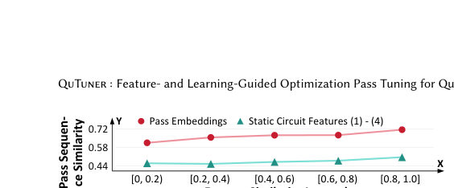
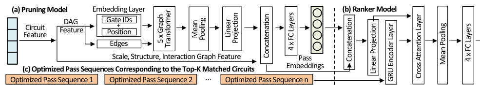


Summary. QuTuner is a novel framework designed to automatically and efficiently tune the sequence of passes used by quantum compilers. It overcomes limitations of previous methods by incorporating 'optimization-aware pass embeddings' that capture how circuits react to specific compiler steps. The approach significantly boosts optimization performance while drastically cutting down the computational time needed for tuning.
Why it may be interesting. While focused on software compilation, the core concept of using learned representations (embeddings) derived from system responses to guide complex sequential decisions is highly relevant for modeling optimization paths in open quantum systems or resource allocation problems.
Main problem. Quantum compilers require effective pass tuning to minimize resource costs (gates, depth) while maintaining high execution fidelity.
Main result. QuTuner significantly improves evaluation-metric reduction (up to 84.85% on Qiskit) and drastically reduces the time required for tuning compared to existing state-of-the-art methods.
Method. The framework builds a large dataset by characterizing circuits using both static features and novel optimization-aware pass embeddings, which are then used to train offline models for candidate retrieval and ranking of optimal pass sequences.
Model / system. The system is quantum computation implemented via quantum circuits (OpenQASM code) that undergo compilation through various passes (layout, routing, optimization).
Key observables. Optimization metrics include 2Q gate count reduction ($\Delta 2Q$), 1Q gate count reduction ($\Delta 1Q$), and circuit depth reduction ($\Delta ext{Depth}$).
Important parameters / regimes. The tuning objective is a weighted combination of these metric reductions, prioritizing hardware-agnostic, circuit-level metrics.
Assumptions / limitations. The primary limitation addressed is that prior methods only search small optimization subspaces and rely on static features that fail to capture how circuits react dynamically to specific compiler passes.
Figures summary. Figures illustrate the quantum compilation stages (Qiskit example), the overall two-stage QuTuner workflow (offline dataset construction and online prediction/refinement), and detailed feature representations for a sample circuit.
Paper structure. The paper first identifies limitations in current pass tuning approaches. It then introduces QuTuner, detailing its methodology: building an optimization dataset, characterizing circuits via static features and pass embeddings, training retrieval/ranking models offline, and finally applying these to unseen circuits with lightweight refinement online.
Quantum compilers play a key role in transforming quantum circuits into lower-cost implementations with improved execution fidelity. This process is commonly guided by circuit-level metrics, such as gate counts and circuit depth. Although compiler pass tuning has been widely studied in classical compilation, directly transferring these techniques to quantum compilers is challenging, because quantum programs are expressed as circuits and exhibit optimization behaviors that are shaped by quantum-specific structures. Prior quantum compiler tuning approaches have begun to use circuit features to guide pass selection, but they remain limited in two aspects: they search only a small portion of the optimization-pass space, and they mainly rely on static features that do not explicitly reflect how a circuit reacts to compiler optimizations. We present QuTuner, a feature-guided quantum compiler pass tuning framework that generalizes across compilers and tuning objectives. QuTuner first builds a large optimization dataset. It then characterizes each circuit from two complementary views: static circuit features that describe circuit structure, and optimization-aware pass embeddings that summarize the circuit's responses to individual optimization passes. Using these representations, QuTuner trains two offline models to retrieve and rank candidate pass sequences for unseen circuits, followed by lightweight refinement. We evaluate QuTuner on Qiskit and PyTKET using two benchmark suites. On Qiskit, QuTuner improves the evaluation-metric reduction by up to 84.85% over the strongest baseline while reducing tuning time by 73.59%. On PyTKET, it improves metric reduction by up to 18.68% with a 64.49% reduction in tuning time. These results show that QuTuner provides an effective approach to adaptive pass tuning for quantum compilers.
Authors: K. M. Kojima, M. Miyazaki, M. Hiraishi, A. Koda, R. Kadono, C. Baines, Y. Tsuchiya, H. S. Suzuki, H. Kitazawa
Type: experiment · Category: strongly correlated electrons · PDF: https://arxiv.org/pdf/2607.04628v1
Analysis basis: full PDF text, analyzed in chunks
Topic relevance: Kondo & dissipative impurity 1/5
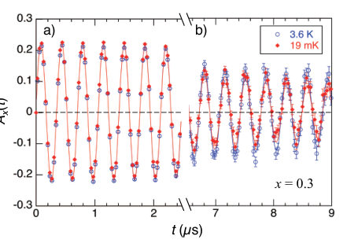


Summary. This work uses muon spin rotation ($\mu$SR) to study superconductivity in $ ext{Cu}_{1-x} ext{Zn}_x ext{Ir}_2 ext{S}_4$, a material near a metal-insulator transition. The results confirm an s-wave superconducting state, arguing that high electronic disorder forces the pairing symmetry into an isotropic form. This suggests that structural scattering and proximity to the Mott-Ioffe-Regel limit are key tuners of superconductivity in this correlated system.
Why it may be interesting. The paper provides experimental evidence of how strong scattering (disorder) can stabilize an isotropic s-wave superconducting state even when underlying physics suggests complex, anisotropic pairing mechanisms expected in correlated materials.
Main problem. Investigating superconductivity in Zn-substituted thiospinel $ ext{Cu}_{1-x} ext{Zn}_x ext{Ir}_2 ext{S}_4$ near a metal-insulator transition to understand the pairing mechanism.
Main result. The superconducting state is confirmed to be an isotropic, fully gapped s-wave symmetry, which is robustly maintained deep within the 'dirty limit' due to strong electron scattering.
Method. Transverse-field muon spin rotation ($\mu$SR) measurements were used to probe the temperature and field dependence of the superfluid density.
Model / system. The system is the thiospinel $ ext{CuIr}_2 ext{S}_4$, whose superconducting properties are tuned by Zn substitution ($x$), driving it away from a high-temperature metal-insulator transition. The analysis compares results to models incorporating disorder and pressure effects.
Key observables. Superfluid density ($\sigma_s$) derived from $\mu$SR linewidth, normal state resistivity ($ ho$), magnetic susceptibility, and the superconducting critical temperature ($T_c$).
Important parameters / regimes. The system operates in the 'dirty limit' ($\ell \ll \xi_0$) and near the Mott-Ioffe-Regel (MIR) limit due to structural disorder/frustration.
Assumptions / limitations. The analysis assumes a Gaussian approximation for field distributions in $\mu$SR fitting, and that high scattering averages out potential gap anisotropy.
Figures summary. Figures show the temperature dependence of the $\mu$SR linewidth ($\sigma$) below $T_c$, confirming superconducting transitions, alongside magnetic susceptibility data showing order parameter development.
Paper structure. The paper establishes the background on the MI transition and Zn-induced superconductivity. It presents $\mu$SR results showing s-wave pairing in the dirty limit, arguing that disorder smears out unconventional signatures. Finally, it proposes a unified framework linking electronic disorder, proximity to the MIR limit, and high pressure effects.
The thiospinel CuIr$_2$S$_4$ undergoes a metal-insulator transition below $\approx$230 K, which is suppressed by substitution of Cu with Zn (Cu$_{1-x}$Zn$_x$Ir$_2$S$_4$) to induce superconductivity for $0.2\lesssim x\lesssim0.8$. We show that the temperature/field dependence of superfluid density in samples with $x = 0.3$ and 0.4 ($T_{\rm c} \approx 3$ K and 2.5 K) investigated by muon spin rotation and relaxation ($μ$SR) is consistent with a fully gapped $s$-wave pairing. Meanwhile, the relatively high resistivity (10$^{-3}$-10$^{-2}$ $Ω\:$cm) in their normal state suggests that the superconductivity is in the "dirty limit" where the mean free path is much shorter than the coherence length ($\ell \ll ξ_0$). This indicates that the potential anisotropy associated with unconventional pairing mechanisms expected under the strong electron correlations is smeared out by the electron scattering. Based on these observations, we discuss potential link between the Zn substitution-induced superconductivity and that recently discovered in CuIr$_2$S$_4$ under high pressure ($>18$ GPa) where the existence of strong electron scattering is also suggested.
Authors: Ziyang Ding, Ziqiang Huang, Qi Meng, Alexander J. Silenko, Pengming Zhang, Liping Zou
Type: theory · Category: other · PDF: https://arxiv.org/pdf/2607.03747v1
Analysis basis: full PDF text, analyzed in chunks
Topic relevance: non-equilibrium dynamics 1/5
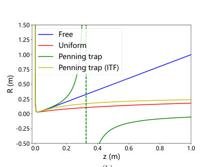
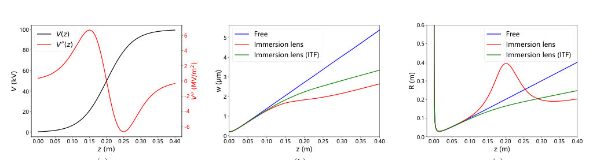

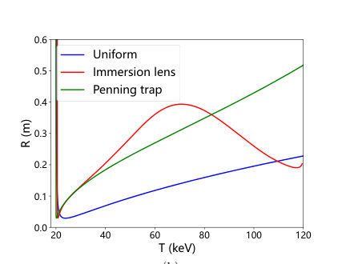
Summary. This paper theoretically analyzes how transverse electric fields affect the propagation of relativistic vortex beams in accelerating electrostatic potentials. By deriving coupled evolution equations and solving them numerically for various lens geometries, the authors demonstrate that the transverse field critically dictates beam focusing and divergence characteristics. The results offer a quantum framework for controlling charged particle beams using tailored electrostatic environments.
Why it may be interesting. This work provides a detailed quantum framework for controlling particle beams using electrostatic fields, which has direct relevance to advanced accelerator physics and quantum optics applications involving charged matter waves.
Main problem. The study investigates how a transverse electric field influences the evolution of relativistic vortex states carried by massive charged particles propagating through an axisymmetric accelerating electrostatic field.
Main result. The transverse field significantly modifies beam focusing and divergence, leading to coupled evolution equations for beam width and wavefront curvature that cannot be explained by longitudinal acceleration alone.
Method. The authors derived coupled evolution equations using the Foldy-Wouthuysen transformation and paraxial approximation, solving them numerically via a simplified differential equation for a combined parameter f(z).
Model / system. The model involves massive charged particles with orbital angular momentum (vortex states) propagating in non-uniform electrostatic fields generated by structures like Penning traps, immersion lenses, and Einzel lenses.
Key observables. Beam width w(z), wavefront curvature R(z), Gouy phase $\Phi_G(z)$, and the on-axis electric potential V(z).
Important parameters / regimes. The strength and spatial variation of the transverse electric field, and the final kinetic energy imparted to the beam.
Assumptions / limitations. The analysis relies heavily on the paraxial approximation and assumes the transverse profile retains a Laguerre-Gauss (LG) functional form for simplification.
Figures summary. Figures compare beam evolution (width vs. curvature) across different field geometries (Uniform, Immersion lens, Penning trap) as kinetic energy increases.
Paper structure. The paper proceeds by deriving the governing equations from the Dirac Hamiltonian using FW and paraxial approximations; it then derives coupled evolution equations for beam parameters; finally, these are solved numerically for specific physical setups to demonstrate the field's influence.
The relativistic vortex states of massive charged particles propagating in non-uniform axisymmetric electric field are studied. Starting from the stationary-state equation after the relativistic Foldy-Wouthuysen (FW) transformation and employing the paraxial approximation, the coupled evolution equations for the beam width, wavefront curvature, and Gouy phase are derived. The equations are solved numerically for a quadratic electrostatic potential, an immersion lens, and an einzel lens. The essential influence of the transverse field on beam evolution is demonstrated. The results provide a relativistic quantum framework for controlling accelerated vortex particle beams using electrostatic fields.
Authors: A. A. Saharian, G. V. Mirzoyan, V. S. Torosyan
Type: theory · Category: other · PDF: https://arxiv.org/pdf/2607.04483v1
Analysis basis: full PDF text, analyzed in chunks
Topic relevance: Keldysh / 2PI / non-Gaussian methods 1/5
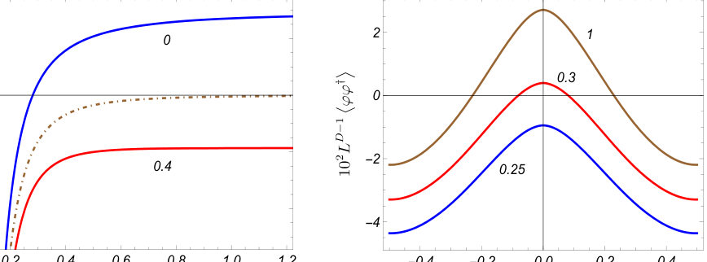


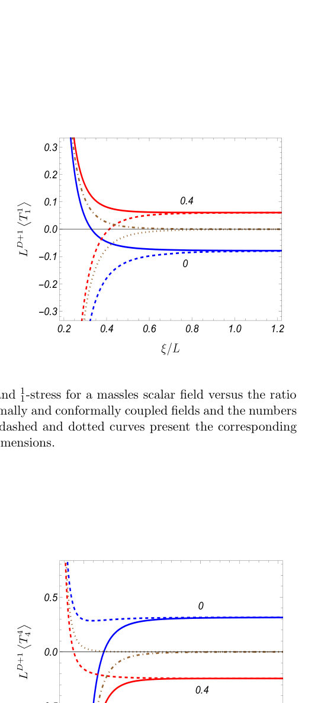

Summary. This paper analyzes the vacuum structure of a charged scalar field confined to Rindler spacetime with compactified dimensions. It calculates how topological effects, quantified by enclosed magnetic fluxes, modify the vacuum expectation values of observables like $\langle T_{\mu u} angle$. The results highlight distinct decay behaviors—exponential versus power-law—depending on whether the field is massless and if the flux conditions are trivial.
Why it may be interesting. The study connects concepts from quantum field theory in curved spacetime (Rindler/Fulling-Rindler) with topology via magnetic fluxes, yielding non-trivial vacuum energy corrections that decay differently based on mass and flux conditions.
Main problem. The study investigates how compactifying spatial dimensions within Rindler spacetime affects the vacuum expectation values (VEVs) of field observables for a charged scalar field.
Main result. The VEVs exhibit topological contributions dependent on enclosed magnetic fluxes, and the difference between Fulling-Rindler and Minkowski vacua is generally exponentially small unless the field is massless with zero phases, leading to power-law decay.
Method. Calculations rely on evaluating vacuum expectation values using Hadamard functions and mode summation techniques, comparing results across different topological limits (Minkowski vs. Rindler).
Model / system. The system models a charged scalar field in a $(D+1)$-dimensional spacetime that is locally Rindler, incorporating compact dimensions with quasi-periodicity conditions related to magnetic fluxes.
Key observables. Vacuum expectation values of the field squared ($\langle \phi^2 angle$) and components of the energy-momentum tensor ($\langle T_{\mu u} angle$).
Important parameters / regimes. Proper acceleration, compactification lengths ($L_l$), field mass ($m$), and enclosed magnetic fluxes ($\Phi_l$).
Assumptions / limitations. The analysis assumes a locally Rindler geometry and utilizes approximations in various asymptotic limits (e.g., near the horizon or for small accelerations).
Figures summary. Figures illustrate the VEV of the field squared for massless fields showing dependence on acceleration/compactification parameters, comparing results to trivial topology cases.
Paper structure. The paper analyzes the problem by first setting up the field equation and periodicity conditions; it then calculates $\langle \phi^2 angle$ and $\langle T_{\mu u} angle$, deriving explicit forms for the topological contributions in different limits, and finally applying these results to physical scenarios like black hole horizons.
We investigate how the compactification of some spatial dimensions in Rindler spacetime affects the vacuum expectation values (VEVs) of the field squared and the energy-momentum tensor for a charged scalar field prepared in the Fulling-Rindler vacuum state. A toral compactification is considered with quasi-periodicity conditions on the field operator along the compact dimensions. The phases of these conditions are interpreted in terms of the magnetic flux enclosed by the compact dimensions. For a general number of spatial dimensions, the components of the VEVs are explicitly separated, corresponding to the expectation values in the Minkowski vacuum. As a limiting case, the VEVs are retrieved in Rindler spacetime with trivial topology. We demonstrate that, for non-zero phases in the periodicity conditions, the vacuum energy-momentum tensor exhibits off-diagonal components with indices in the compact subspace. Near the Rindler horizon, the leading terms in the asymptotic expansions of the field squared and the diagonal components of the energy-momentum tensor coincide with the corresponding VEVs in Rindler spacetime with trivial topology. The off-diagonal components of the energy-momentum tensor vanish on the Rindler horizon. For small accelerations, the difference between the VEVs in the Fulling-Rindler and Minkowski vacua is exponentially small. The exception to this is a massless field with zero phases in the periodicity conditions. In this special case, the difference decays according to a power law as a function of acceleration. As an application, we consider the VEVs near the horizon of cylindrical black holes and topological black holes with toroidal horizons.
Authors: Hossein Rangani Jahromi
Type: theory · Category: other · PDF: https://arxiv.org/pdf/2607.04488v1
Analysis basis: full PDF text, analyzed in chunks
Topic relevance: entanglement & information structure 1/5

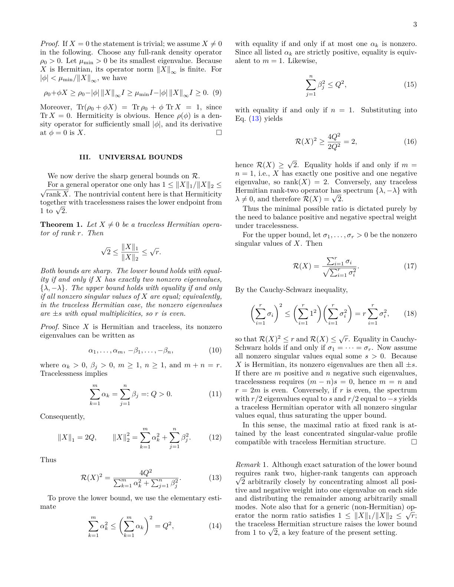

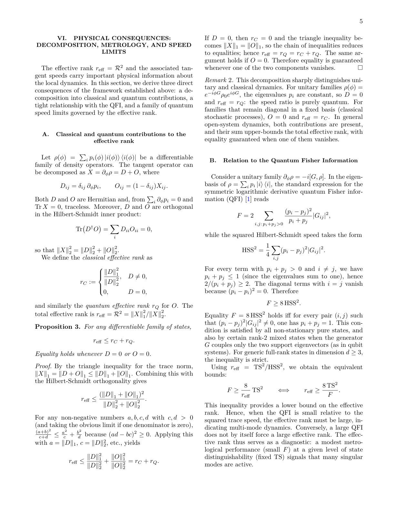

Summary. This theoretical paper derives universal bounds for the ratio between two different measures of quantum speed (trace vs. Hilbert-Schmidt) for evolving quantum states. The central finding is that this ratio, which quantifies the 'effective rank' of the dynamics, is tightly constrained by the traceless and Hermitian nature of the evolution operator. It establishes $\mathcal R=\sqrt{2}$ for pure states and provides a new diagnostic tool linking local geometry to fundamental metrological limits.
Why it may be interesting. This work provides a powerful, geometry-based metric ($\mathcal R$) that quantifies how much the local dynamics deviate from simple spectral behavior, offering new constraints on quantum evolution times beyond standard energy or coherence measures.
Main problem. The paper investigates universal bounds for the ratio between the trace speed and the Hilbert-Schmidt speed of a quantum state's evolution, $\mathcal R(\phi)$, which is defined using the tangent operator $X = \partial_\phi ho$. This ratio serves as a diagnostic tool for local quantum dynamics.
Main result. Sharp bounds are established: $\sqrt{2} \le \mathcal R(X) \le \sqrt{r}$ for any rank-$r$ traceless Hermitian tangent operator $X$, with the pure-state limit yielding $\mathcal R = \sqrt{2}$. The effective rank, related to $\mathcal R^2$, provides a measure of active singular modes.
Method. The analysis relies on exploiting the mathematical constraints imposed by the tangent operator being both Hermitian and traceless. Techniques involve applying Schatten norm inequalities and relating this ratio to quantum Fisher information (QFI) bounds.
Model / system. The study concerns differentiable families of density operators $ ho(\phi)$ in a finite-dimensional Hilbert space, where the dynamics are characterized by the tangent operator $X = \partial_\phi ho$. Specific attention is paid to pure-state evolution and general unitary time evolutions.
Key observables. Trace-to-Hilbert-Schmidt Speed Ratio ($\mathcal R$), Effective Rank ($r_{ ext{eff}}$), Quantum Fisher Information (QFI).
Important parameters / regimes. The Hilbert space dimension $d$, the rank $r$ of the tangent operator, and the specific value $\sqrt{2}$ achieved for pure states.
Assumptions / limitations. The analysis is restricted to nonstationary points where the tangent operator $X(\phi)$ is nonzero. The key mathematical structure assumed is that $X$ is Hermitian and traceless.
Paper structure. The paper proceeds by defining $\mathcal R$, deriving universal bounds ($\sqrt{2}$ to $\sqrt{r}$) based on the operator's spectral properties, establishing the effective rank decomposition ($r_{ ext{eff}} \le r_C + r_Q$), and finally linking this diagnostic quantity to fundamental limits like QFI and quantum speed limits.
We study the ratio between the trace speed and the Hilbert-Schmidt speed for differentiable finite-dimensional quantum states, $\mathcal R(φ)=\|\partial_φρ(φ)\|_1/\|\partial_φρ(φ)\|_2$. Because $\partial_φρ(φ)$ is always Hermitian and traceless, this ratio is constrained more strongly than for a generic operator. For any nonzero tangent operator $X=\partial_φρ$ of rank $r$, we prove the sharp bounds $\sqrt{2}\le \|X\|_1/\|X\|_2\le \sqrt r$. The lower bound is attained exactly for rank-two tangents, while the upper bound is attained exactly when all nonzero singular values are equal, which in the traceless Hermitian setting requires even rank. At every nonstationary point of a pure-state family, the tangent has rank two, implying $\mathcal R=\sqrt2$. For odd Hilbert-space dimension $d$, we further prove the sharp global maximum $\mathcal R\le \sqrt{d-1/d}$, with equality characterized by full-rank spectra whose positive and negative eigenvalues are separately degenerate and have multiplicities differing by one. We identify $\mathcal R^2$ as the inverse participation ratio of the singular-value distribution of the tangent operator, giving $\mathcal R$ a natural interpretation as an effective-rank diagnostic for local quantum dynamics. Furthermore, we decompose the effective rank into classical (eigenvalue) and quantum (eigenvector) contributions and prove the bound $r_{\mathrm{eff}}\le r_C + r_Q$, with equality guaranteed when either component vanishes. We establish a direct inequality linking the effective rank to the quantum Fisher information (QFI), which forces a large number of active singular modes when the QFI is small relative to the squared trace speed. Finally, we derive a hierarchy of quantum speed limits in which the effective rank controls the tightness of bounds expressed through the Hilbert-Schmidt speed.
Authors: Harold Ollivier
Type: theory · Category: quantum information and computing · PDF: https://arxiv.org/pdf/2607.03983v1
Analysis basis: full PDF text, analyzed in chunks
Topic relevance: quantum measurements 1/5


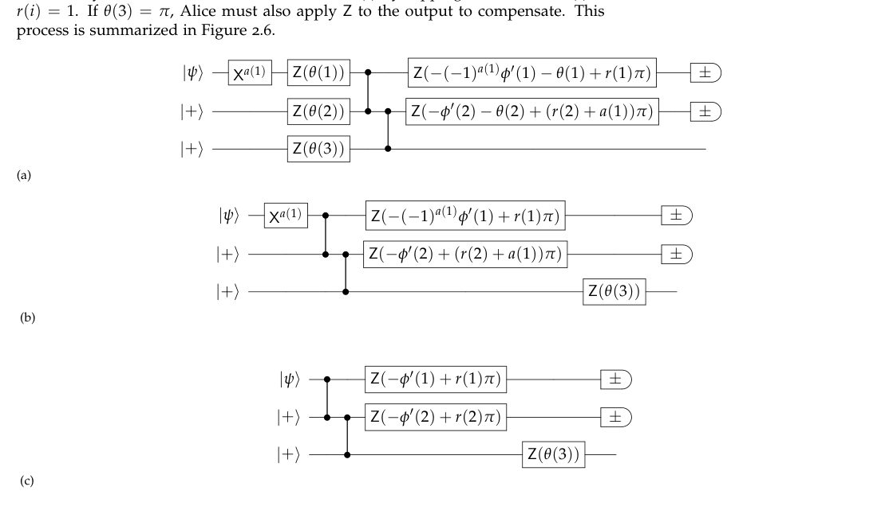

Summary. This paper provides a high-level guide to architecting secure protocols that allow one party (the verifier) to confirm the results of another party's (the server's) complex quantum computation without needing excessive or perfect quantum resources. It achieves this by modularizing verification into manageable primitives and systematically relaxing stringent hardware requirements found in early theoretical proposals.
Why it may be interesting. While highly theoretical, the focus on resource constraints, noise resilience, and architectural principles of quantum computation verification is crucial for guiding the practical implementation roadmap for future quantum hardware.
Main problem. The core problem is developing methods for a limited-resource verifier to statistically verify the output of an untrusted, fully quantum server performing complex computations.
Main result. The authors propose a modular and composable framework that systematically relaxes hardware requirements for quantum verification protocols by incorporating techniques like trusted rotations and weak coherent pulses.
Method. The work synthesizes existing developments into a toolbox comprising three independent primitives: remote state preparation, trap-based deviation detection, and error-correcting embedding. It relies heavily on abstract composability theorems from quantum cryptography.
Model / system. The context involves general quantum computation models, including Measurement Based Quantum Computation (MBQC) and the delegation of fault-tolerant quantum computations in noisy environments.
Key observables. Security proofs, hardware overheads for verification protocols, statistical distinguishability ($\epsilon$), and robustness against gate-level noise.
Important parameters / regimes. The efficiency gains achieved by replacing demanding components (e.g., single-photon sources) with simpler physical resources like weak coherent pulses or local rotations.
Assumptions / limitations. The manuscript itself is a conceptual synthesis, deliberately omitting the dense technical proofs found in underlying publications; it assumes the reader understands advanced quantum information theory concepts.
Paper structure. The paper progresses by introducing a modular framework (Part II), followed by improvements addressing specific hardware limitations like eliminating spatial overheads and improving robustness for multi-party or fault-tolerant settings in later parts.
How can a user with limited quantum resources verify the output of an untrusted, fully quantum server? This manuscript provides a conceptual synthesis of some recent developments toward answering this question under statistical (information-theoretic) security. Rather than duplicating the dense technical proofs of the underlying publications, our focus here is on the physical motivations, the structural connections between different protocols, and the path toward hardware-efficient implementation. We begin by introducing a modular, composable framework that partitions verification into three distinct, independent primitives: remote state preparation, trap-based deviation detection, and error-correcting embedding. Using this framework, we show how the demanding hardware requirements of early protocols can be systematically relaxed. We review schemes that eliminate the spatial overhead, remove the need to prepare computational-basis dummy states, and replace single-photon sources with trusted local rotations or weak coherent pulses. Finally, we examine how these techniques scale, both to asymmetric multi-party settings and to the delegation of fully fault-tolerant computations in the presence of gate-level noise. This document is intended as a guide to the architectural principles of practical quantum verification.
Papers from primary archives without highlighted authors or any topic match. Click to expand.
Authors: Hiroshi Ohno
Type: both · Category: quantum information and computing · PDF: https://arxiv.org/pdf/2607.03805v1
Analysis basis: full PDF text, analyzed in chunks
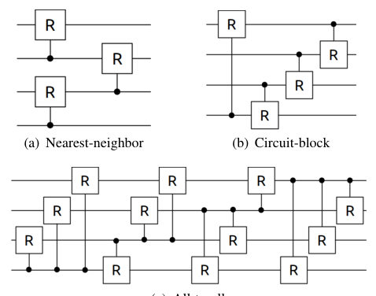


Summary. This paper introduces a novel regularization technique for Quantum Neural Networks (QNNs) that leverages the inherent symmetries of the input data. By adding a symmetry-preserving penalty term to the loss function, the method improves training speed and generalization performance across various tasks. The results demonstrate that incorporating this symmetry knowledge enhances QML model robustness.
Why it may be interesting. This work directly addresses practical challenges in quantum machine learning by providing a principled way to regularize models based on underlying physical symmetries, which is crucial for building robust quantum algorithms.
Main problem. The study aims to improve the generalization performance and accelerate the training speed of Quantum Neural Networks (QNNs) by incorporating constraints derived from input data symmetries.
Main result. The proposed symmetry-based regularization method leads to faster convergence and lower test errors across both classification tasks and quantum generative adversarial networks compared to unregularized models. Theoretically, it provides a generalization bound suggesting improved performance when symmetry is enforced.
Method. A novel penalty term, $C_{ ext{symm}}$, is added to the cost function, forcing the parameterized quantum circuit's unitary evolution to align with the symmetries inherent in the input data density matrix $ ho_{in}(x)$. Theoretical analysis involves deriving Rademacher complexity bounds.
Model / system. The model utilizes QNNs implemented via parameterized quantum circuits $U( heta)$, whose output is measured as an expectation value. The analysis covers both classification tasks and generative modeling using Quantum GANs, requiring the definition of input density matrices $ ho_{in}(x)$ for different scenarios.
Key observables. Test errors, convergence speed, Frobenius norm ($\lVert S U( heta) S^\dagger - U( heta) Vert_F$), and Fréchet Inception Distance (FID) for generative tasks.
Important parameters / regimes. The balancing parameter $C$ controlling the regularization strength; circuit depth ($d=2, d=4$).
Assumptions / limitations. It is assumed that enforcing data symmetry via a penalty term can constrain the search space beneficially without overly restricting expressibility. A key limitation noted is that generative tasks might show instability with strong symmetry constraints.
Figures summary. Figures compare loss results for classification (varying depth and regularization strength $C$) and show FID scores for generative tasks up to 100 iterations, illustrating the impact of the penalty term.
Paper structure. The paper introduces the problem, details the symmetry-based regularization method using data symmetries ($ ho_{in}(x)$), provides theoretical generalization bounds via Rademacher complexity, and validates the approach through numerical experiments on both classification and QGAN tasks.
Leveraging data symmetries has recently become a key strategy in quantum neural networks (QNNs) to improve generalization and training efficiency. In this study, we propose a novel regularization method for QNNs based on input data symmetry. By introducing a penalty term that encourages the model to align with data symmetry, our method enables improved training speed and generalization. This symmetry-based regularization is simple to implement and does not require prior knowledge of the symmetry group. We validate its effectiveness through numerical experiments on both classification tasks and quantum generative adversarial networks. Empirical results demonstrate faster convergence and lower test errors. Furthermore, we provide a theoretical generalization bound using Rademacher complexity and conjecture a condition under which models with symmetry exhibit better generalization. Our findings highlight the potential of symmetry-aware regularization in enhancing the performance of QML models.
Authors: Silvie Illésová, Martin Beseda
Type: theory · Category: quantum information and computing · PDF: https://arxiv.org/pdf/2607.03982v1
Analysis basis: full PDF text, analyzed in chunks


Summary. This paper introduces an ontology-supported framework to solve the critical problem of non-reproducible Variational Quantum Algorithm (VQA) execution records. By modeling all interacting components—from ansatzes and Hamiltonians to optimizers and noise models—using OWL, it creates a structured, machine-readable record. This allows researchers to rigorously validate completeness and query the exact context needed for reliable quantum software experimentation.
Why it may be interesting. This work provides a crucial meta-layer for quantum computation research, addressing reproducibility—a major bottleneck when comparing results across different hardware platforms or algorithmic variations. It formalizes the necessary metadata structure for future benchmarking.
Main problem. Variational Quantum Algorithms (VQAs) generate results dependent on numerous interacting choices, making current execution records difficult to reproduce, compare, debug, and reuse.
Main result. The authors propose an ontology-supported framework that successfully models complete VQA execution contexts and can automatically detect missing or malformed metadata.
Method. They use Web Ontology Language (OWL) to model key entities into a structured, machine-readable artifact, validating completeness with SHACL constraints, and enabling querying via SPARQL.
Model / system. The framework models the entire hybrid quantum-classical execution loop of VQAs, including components like ansatzes, Hamiltonians, optimizers, backends, noise models, and measurement outcomes. The motivating example is the Variational Quantum Eigensolver (VQE).
Key observables. Final energy estimates, full execution context metadata (ansatz structure, Hamiltonian representation, optimizer configuration, shot count, random seed), and provenance records.
Important parameters / regimes. Ansatz parameters, noise model parameters, optimization convergence criteria, and software/backend versions are critical inputs.
Assumptions / limitations. The primary assumption addressed is the fragmentation of execution context across disparate sources (code, logs, papers), which necessitates a standardized semantic representation for reliable reproduction.
Figures summary. Figure 1 illustrates the general VQA workflow loop. Figure 2 provides an overview of the ontology structure connecting algorithm configuration to recorded outputs. Table 1 summarizes ontology classes by conceptual module.
Paper structure. The paper introduces the problem of non-reproducible VQA records, proposes the OWL/SHACL/SPARQL framework, details its components and validation mechanisms using examples (like VQE), and demonstrates its utility in capturing full execution context.
Variational quantum algorithms are hybrid quantum-classical workflows whose results depend on many interacting choices, including the ansatz, Hamiltonian, optimizer, backend, shot count, noise model, mitigation method, random seed, stopping criteria, and software versions. In current practice, this information is often scattered across code, configuration files, logs, backend metadata, and paper descriptions, making executions difficult to reproduce, compare, debug, and reuse. This paper proposes an ontology-supported framework for representing Variational Quantum Algorithm (VQA) execution records as structured and machine-readable software engineering artifacts. The framework defines a Web Ontology Language (OWL) ontology for modeling the main entities involved in VQA experimentation, including algorithms, circuits, ansatzes, Hamiltonians, optimizers, backends, noise models, mitigation techniques, execution steps, software environments, measurement outcomes, and results. It further combines the ontology with Shapes Constraint Language (SHACL) constraints for validating completeness and consistency, and SPARQL Protocol and RDF Query Language (SPARQL) competency queries for retrieving reproducibility-relevant information. We demonstrate the approach using Variational Quantum Eigensolver (VQE) execution records, including a valid record and intentionally incomplete or inconsistent examples. The results show that the framework can represent complete VQA execution contexts, detect missing or malformed metadata, and support query-based inspection of information needed for reproducible quantum software experimentation.
Authors: Karl Svozil
Type: theory · Category: other · PDF: https://arxiv.org/pdf/2607.04289v1
Analysis basis: full PDF text, analyzed in chunks
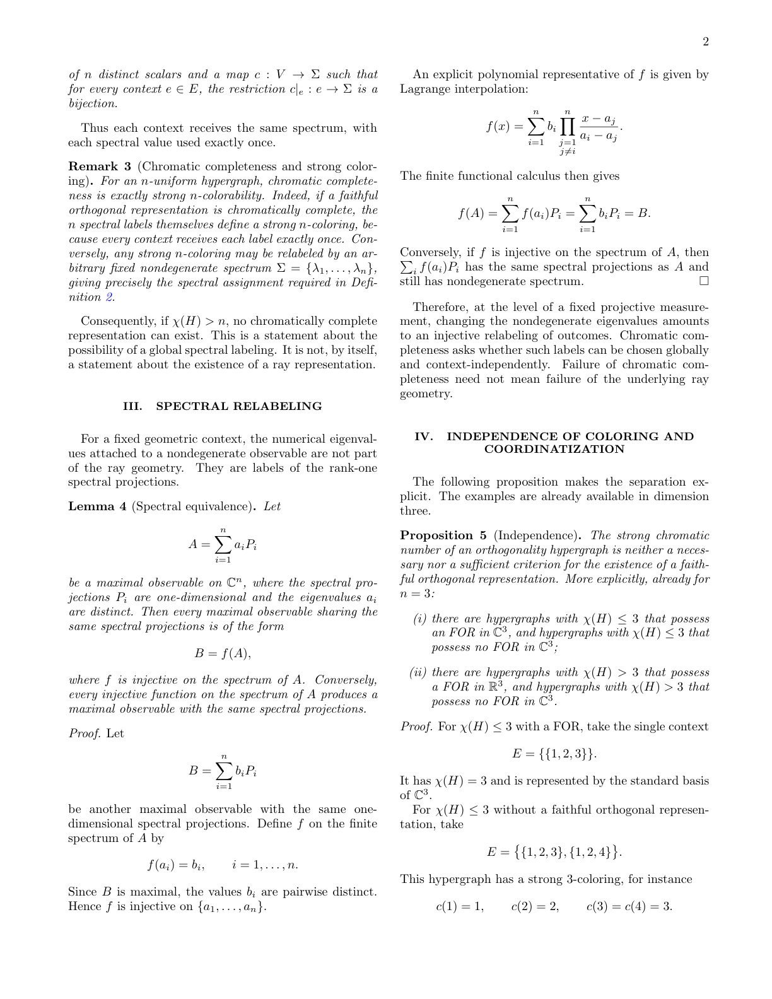
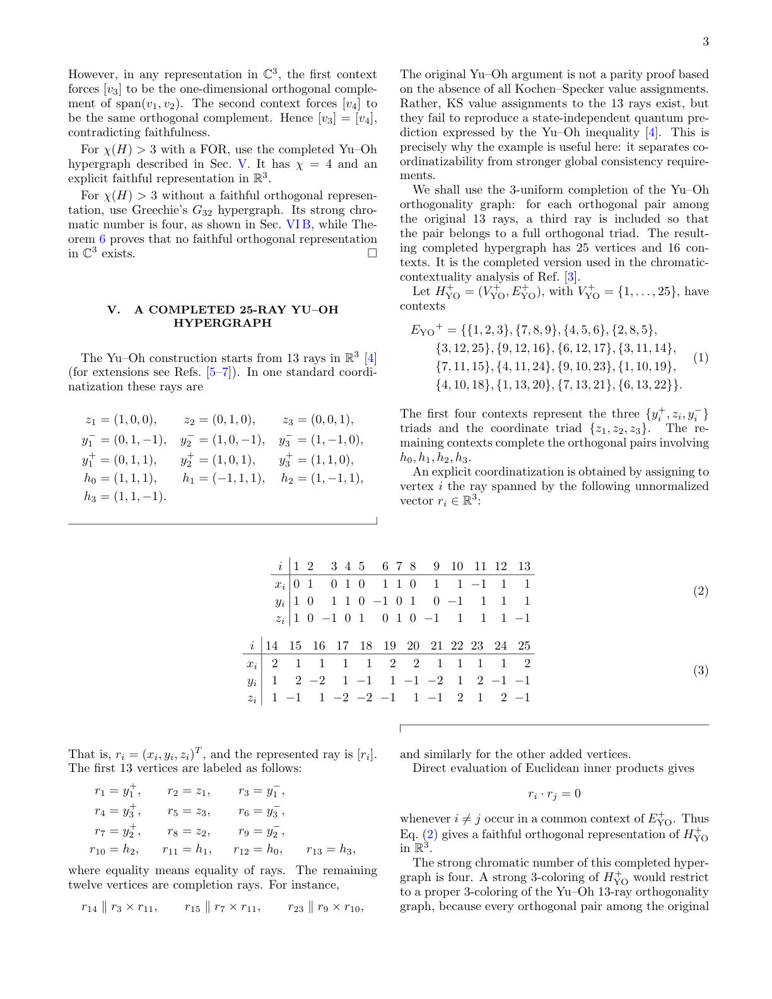


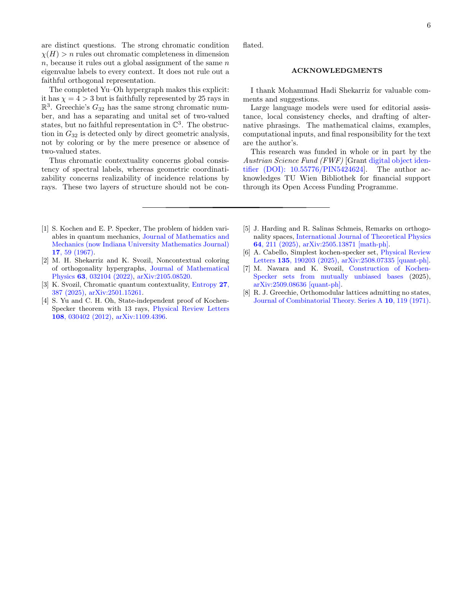
Summary. The paper rigorously separates two distinct concepts in the study of quantum contextuality: chromatic completeness and geometric coordinatizability. By analyzing specific hypergraphs, the authors demonstrate that a high strong chromatic number does not guarantee a failure to find a faithful orthogonal representation, proving that the obstruction can be purely projective-geometric rather than merely spectral.
Why it may be interesting. This work is highly relevant for theoretical physicists studying quantum contextuality, as it provides a rigorous mathematical tool to distinguish between different types of physical limitations—those arising from spectral labeling versus those arising from underlying geometric structure in Hilbert space representations.
Main problem. The paper aims to establish a strict logical separation between two concepts in orthogonality hypergraphs: chromatic completeness (global spectral consistency) and geometric coordinatizability (existence of a faithful orthogonal representation).
Main result. The authors prove that the strong chromatic number ($\chi(H)$) only obstructs chromatic completeness, not necessarily the existence of a faithful orthogonal representation (FOR), demonstrating their logical independence.
Method. The separation is demonstrated by comparing two specific hypergraphs—the completed Yu–Oh configuration and Greechie’s $G_{32}$—showing that one has $\chi=4$ but an FOR, while the other has $\chi=4$ but no FOR due to projective-geometric constraints.
Model / system. The model involves orthogonality hypergraphs $H=(V, E)$, where vertices represent physical observables and edges (contexts) are sets of mutually orthogonal rays in a Hilbert space ($\mathbb{C}^n$).
Key observables. Strong Chromatic Number $\chi(H)$; existence/failure of Faithful Orthogonal Representation (FOR).
Important parameters / regimes. Dimensionality $n$ (specifically $n=3$ is used for comparison); the value of $\chi(H)$ relative to $n$.
Assumptions / limitations. The analysis compares results between real ($\mathbb{R}^3$) and complex ($\mathbb{C}^3$) geometries, which highlights potential differences in the underlying mathematical structure.
Figures summary. Not specified by notes; the comparison relies on algebraic proofs using specific hypergraph structures (Yu-Oh and $G_{32}$).
Paper structure. The paper defines the two phenomena, presents the examples ($ ext{H}^+{ ext{YO}}$ and $ ext{G}$), and culminates in proving that the obstruction mechanisms are distinct by showing one fails due to coloring constraints while the other fails due to algebraic/geometric incompatibility.
We establish a strict logical separation between two distinct phenomena in orthogonality hypergraphs: chromatic completeness, the possibility of assigning a single globally consistent nondegenerate spectrum to all contexts, and geometric coordinatizability, the existence of a faithful orthogonal representation by rays. A strong chromatic number larger than the Hilbert-space dimension obstructs only the former. It does not, by itself, obstruct the existence of a faithful orthogonal representation. We make this separation explicit by comparing two three-dimensional examples with the same strong chromatic number. A completed 25-ray version of the Yu-Oh configuration has strong chromatic number four and nevertheless possesses an explicit faithful orthogonal representation in R^3. Conversely, Greechie's G_{32} hypergraph also has strong chromatic number four, and has a separating and unital set of two-valued states, but we give an elementary algebraic proof that it admits no faithful orthogonal representation in C^3. The obstruction in G_{32} is therefore not chromatic but projective-geometric: the incidence relations force two distinct atoms to collapse onto the same ray.
Authors: Friederike Butt, Luis Colmenarez, Erik Weilandt, Tom Peham, Robert Wille, Markus Müller
Type: theory · Category: quantum information and computing · PDF: https://arxiv.org/pdf/2607.05107v1
Analysis basis: full PDF text, analyzed in chunks
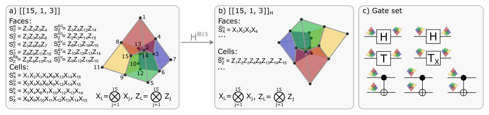
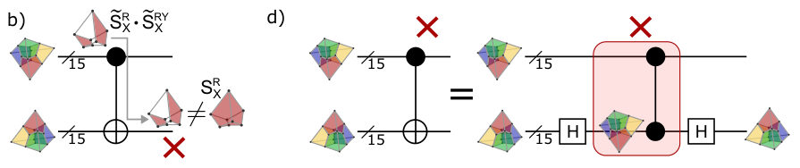


Summary. The paper addresses the challenge of implementing a universal set of gates fault-tolerantly by proposing a hybrid architecture combining two related 3D color codes. This combination allows for most necessary operations (like magic state injection and entanglement) to remain transversal, significantly reducing resource overhead compared to fully non-transversal methods.
Why it may be interesting. This work provides concrete, resource-aware protocols for achieving universal quantum computation by cleverly circumventing theoretical limitations using structured code combinations, which is highly relevant to physical implementations on various hardware platforms.
Main problem. Achieving fault-tolerant quantum computation requires implementing a universal set of logical gates transversally, which is forbidden by the Eastin–Knill theorem on a single Quantum Error-Correcting (QEC) code.
Main result. The authors propose a hybrid architecture using two complementary color codes (tetrahedral and H-tetrahedral) to realize an almost-universal transversal gate set, completing universality via a fault-tolerant round-robin construction for the logical controlled-Z gate.
Method. The approach combines operations across two related QEC codes, utilizing one-way transversal gates and decomposing complex entangling gates into sequences of simpler, fault-tolerant components.
Model / system. The system is based on a hybrid architecture combining the tetrahedral three-dimensional color code and its Hadamard-transformed counterpart ($ ext{H-tetrahedral}$ code), specifically analyzed using the $[[15, 1, 3]]$ encoding.
Key observables. Logical state fidelities ($F_{CZ}|0+ angle$, $F_{CZ}|1+ angle$), transversal gate support (CNOT, Toffoli), and resource overheads for non-transversal operations.
Important parameters / regimes. The code distance parameters are analyzed, including the relationship between effective X-error distance ($d_X$) and Z-error distance ($d_Z = 3d^2 + 1/4$).
Assumptions / limitations. The initial transversal CNOT gate only works in one direction (tetrahedral control $ o$ H-tetrahedral target), necessitating the round-robin construction for full universality.
Figures summary. Figures illustrate stabilizer support on both codes, detail the one-way transversal CNOT operation, show the possibility of a Toffoli gate, and depict fault-tolerant syndrome extraction steps using auxiliary qubits.
Paper structure. The paper establishes the need for hybrid codes due to the Eastin-Knill theorem; it details the construction of an almost-universal set via complementary transversal operations (CNOT); finally, it completes universality by constructing a fault-tolerant logical controlled-Z gate using pieceable round-robin techniques.
Transversal logical gates provide a direct route to fault-tolerant quantum computation, but the Eastin-Knill theorem forbids a universal transversal gate set within a single quantum error-correcting code. We propose a hybrid architecture based on the tetrahedral three-dimensional color code and its Hadamard-transformed counterpart, which we call the H-tetrahedral code. The two encodings support complementary transversal non-Clifford operations. Combined with bitwise Hadamard transformations that switch between the two encodings and a one-way transversal logical CNOT from the tetrahedral code to the H-tetrahedral code, these operations realize an almost-universal transversal logical gate set that enables both the creation of entanglement and logical states with magic. We complete a universal gate set through a pieceably fault-tolerant round-robin construction of a logical controlled-$Z$ gate between two H-tetrahedral codes. This logical entangling gate is interleaved with reduced-overhead Steane-type syndrome extraction using logical two-dimensional color-code auxiliary qubits. Our construction provides a new route toward implementing classically hard-to-simulate quantum algorithms where magic and most entangling operations are transversal while the resource overhead is concentrated in a small number of non-transversal Clifford entangling operations.
Authors: Sangchul Oh
Type: theory · Category: quantum information and computing · PDF: https://arxiv.org/pdf/2607.04054v1
Analysis basis: full PDF text, analyzed in chunks
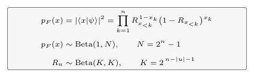
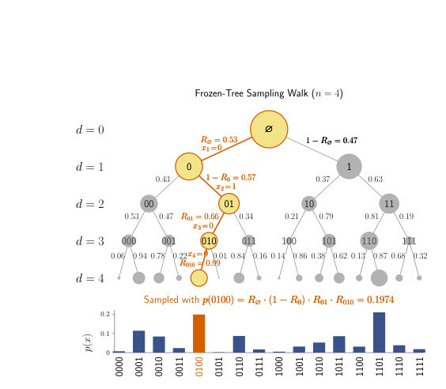
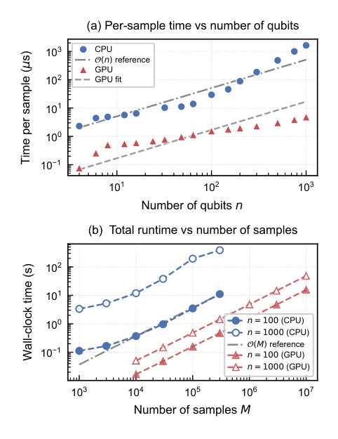

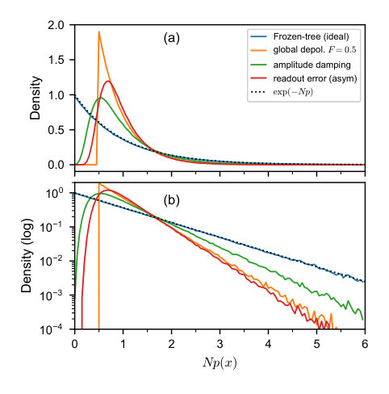
Summary. This work introduces the 'frozen-tree sampling' algorithm, which efficiently simulates the probability distribution generated by random quantum circuits. By showing that this classical sampler yields statistically identical results to true quantum measurements, the authors argue that the claimed quantum advantage of RCS is illusory based on sample statistics alone.
Why it may be interesting. It directly challenges a foundational assumption in quantum computation benchmarking by providing an efficient classical simulation for a key hard problem, forcing researchers to look for non-sample-based advantages.
Main problem. The paper challenges the widely held belief that Random Circuit Sampling (RCS) provides a computational task demonstrating inherent quantum advantage over classical methods.
Main result. An efficient classical 'frozen-tree sampling' algorithm can reproduce the exact statistical distribution of probabilities generated by random quantum circuits, meaning no sample-based test can distinguish between the two.
Method. The authors propose and analyze a classical frozen-tree sampler that exploits the conditional scale invariance of Haar-random states to draw bitstrings in linear time $O(n)$.
Model / system. The model involves random pure quantum states $|\psi angle$ on $n$ qubits, whose probability distribution $p(x) = |\langle x|\psi angle|^2$ follows a flat Dirichlet distribution.
Key observables. The probability vector $p(x)$ of finding bitstring $x$, and diagnostic measures like the Branch-Ratio Fidelity ($F_\sigma$) used to compare sample fluctuations.
Important parameters / regimes. Number of qubits ($n$), which dictates the complexity; the underlying Dirichlet distribution parameters (all set to 1).
Assumptions / limitations. The core assumption exploited is the exact conditional scale invariance property of Haar-random quantum states, allowing for a classical construction.
Figures summary. Figures illustrate the binary-tree representation of probabilities and show that the spread ($\hat{\sigma}_d$) calculated via the frozen tree exactly matches ideal theoretical values, unlike empirical data from actual circuits.
Paper structure. The paper first introduces RCS as a benchmark, then details the mathematical structure using conditional scale invariance to derive the efficient classical sampler. It rigorously proves statistical equivalence across various noise models and concludes that sample statistics alone are insufficient to prove quantum advantage.
Random circuit sampling of bitstrings from a Haar-random quantum state is widely believed to be classically intractable, and has therefore been implemented as a primary benchmark for demonstrating quantum advantage. Here, we challenge this premise by proposing an efficient classical frozen-tree sampling algorithm that exploits the conditional scale invariance of Haar-random quantum states [Oh, arXiv:2602.19448]. The frozen-tree sampler draws bitstrings of $n$ qubits in $O(n)$ time per sample. Moreover, its output probability $p_F(x)$ is statistically identical to the probability $p_C(x)$ of a random quantum circuit, since both are independent instances of the same Dirichlet distribution. Consequently, no statistical test acting on samples alone can distinguish the classical frozen-tree sampler from a quantum random circuit. The claimed quantum advantage of random circuit sampling therefore does not withstand scrutiny: its hardness lies not in sampling from the Dirichlet distribution, which is classically efficient, but in identifying a specific circuit realization.
Authors: Masashi Yamashita, Shu Tanaka
Type: both · Category: disordered systems and neural networks · PDF: https://arxiv.org/pdf/2607.05014v1
Analysis basis: full PDF text, analyzed in chunks

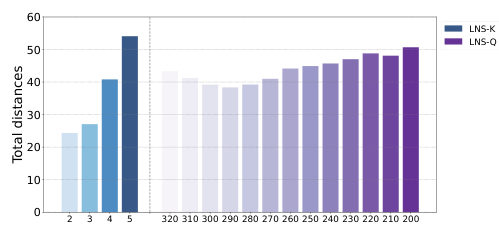
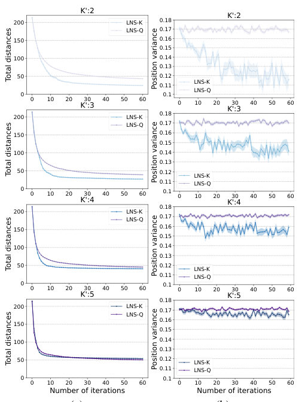
Summary. This paper investigates optimizing complex routing problems using Ising machines via Large Neighborhood Search (LNS). The authors compare two methods for defining subproblems—one based on physical routes and another based on raw QUBO variables. They find that incorporating the semantic structure of the current solution, rather than just matching variable counts, leads to superior optimization trajectories.
Why it may be interesting. This work bridges combinatorial optimization heuristics with quantum hardware constraints, providing insights into how the structure of a problem's representation (semantic vs. purely mathematical) impacts performance on quantum annealers.
Main problem. The study aims to improve large-scale constrained combinatorial optimization problems, such as Vehicle Routing Problems (VRPs), by utilizing Ising machines within a Large Neighborhood Search (LNS) framework.
Main result. Subproblem design must consider the semantic and geometric structure inherited from the current solution, not just the number of binary variables. A route-structure based approach (LNS-K) outperformed a QUBO variable-based approach (LNS-Q) under matched-size comparisons.
Method. The authors compare two LNS subproblem constructions—one based on physical routes (LNS-K) and one based purely on the mathematical structure of the QUBO variables (LNS-Q)—and test their performance using quantum annealing simulations.
Model / system. The problem is formulated as a Quadratic Unconstrained Binary Optimization (QUBO) model, $H(\mathbf{x}) = \mathbf{x}^T Q \mathbf{x}$, applied to VRPs. The optimization is performed iteratively on restricted subproblems using Ising machines.
Key observables. Total distance traveled ($D(\mathbf{x})$), Position variance ($V_{pos}$), and the iterative trajectory of solution quality during LNS.
Important parameters / regimes. The comparison uses a matched-size protocol, ensuring both LNS variants operate on subproblems with an equal number of binary variables ($B_m$).
Assumptions / limitations. The primary limitation is that while LNS-K shows decreasing position variance (suggesting localization), the authors note this does not prove causality regarding total distance improvement.
Figures summary. Figures compare the iterative evolution of total distance and position variance for LNS-K versus LNS-Q across varying subproblem sizes, showing distinct trajectories.
Paper structure. The paper introduces the challenge of large QUBOs in LNS, details the two competing subproblem constructions (LNS-K vs. LNS-Q), compares their performance on VRP metrics under matched-size conditions, and concludes that structural information is paramount for effective quantum optimization design.
Large-scale quadratic unconstrained binary optimization (QUBO) formulations of constrained combinatorial optimization problems often exceed the input-size limit of present Ising machines or suffer from degraded solution quality as the number of binary variables increases. Large neighborhood search (LNS) mitigates this difficulty by sequentially optimizing restricted subproblems, but the structural factors that distinguish subproblems beyond the number of binary variables remain insufficiently characterized. In this study, we examine vehicle routing problems and compare a construction based on the vehicle routes of the current solution, denoted by LNS-K, with a construction based on QUBO variables and constraint relations, denoted by LNS-Q, while controlling the number of binary variables in the subproblems. Under the tested conditions, LNS-K obtained shorter total distances than LNS-Q in the matched-size comparisons, and the position variance, a measure of the spatial spread of the selected customers, decreased during the iterations in LNS-K. These observations suggest that subproblem design for sequential optimization with Ising machines should consider not only subproblem size but also semantic and geometric structures inherited from the current solution.
Authors: Vaibhav Katyal, B. K. Sahoo
Type: theory · Category: other · PDF: https://arxiv.org/pdf/2607.05012v1
Analysis basis: full PDF text, analyzed in chunks

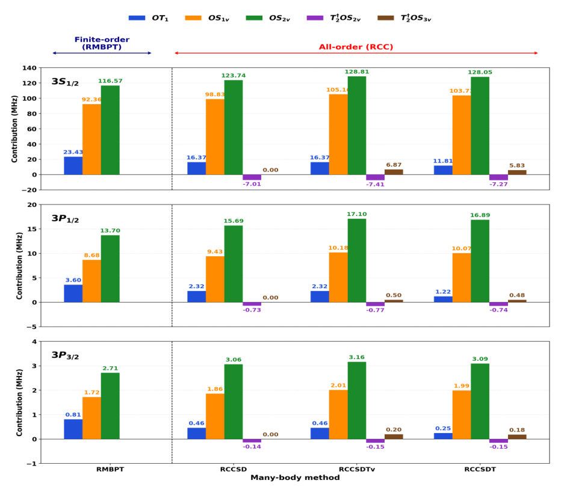
Summary. This paper performs high-precision theoretical calculations on the hyperfine structure constants of sodium using advanced relativistic coupled-cluster methods. By systematically including triple excitations and various QED/relativistic corrections, the authors demonstrate that these higher-order terms are crucial for matching theory to experimental measurements. The study provides a detailed roadmap for calculating atomic properties in light alkali metals.
Why it may be interesting. This work exemplifies state-of-the-art theoretical atomic structure calculations, providing crucial benchmarks for understanding how electron correlation and relativistic effects manifest in measurable quantities like HFS constants.
Main problem. The study aims to accurately determine hyperfine structure constants (HFS) and ionization potentials for the sodium atom by systematically investigating the role of electron correlation effects, particularly those arising from triple excitations.
Main result. Including contributions from triple excitations, along with Breit, QED, and Bohr-Weisskopf corrections, is essential for reconciling theoretical predictions of HFS constants with precise experimental measurements in $^{23} ext{Na}$.
Method. The authors employ relativistic coupled-cluster theory (RCCSDT) alongside various lower-order many-body perturbation theories (RMBPT) to treat electron correlation effects.
Model / system. The system is the sodium atom ($^{23} ext{Na}$), treated using a Dirac-Coulomb Hamiltonian. The calculations involve incorporating relativistic corrections like the Breit interaction and QED effects into the many-body framework.
Key observables. Hyperfine structure constants (magnetic dipole $A_{ ext{hf}}$ and electric quadrupole $B_{ ext{hf}}$) and Ionization Potentials (IPs).
Important parameters / regimes. The relative magnitude of correlation effects versus relativistic/higher-order terms; the importance of triple excitations.
Assumptions / limitations. The calculations rely on approximations inherent to many-body theory, such as truncating the excitation series (e.g., $ ext{RCCSDT}$), though they systematically compare these limits.
Figures summary. Figures illustrate the systematic inclusion of different physical processes (correlation effects) in S and P states compared to D states, showing how corrections contribute significantly to $A_{ ext{hf}}$ constants.
Paper structure. The paper proceeds by establishing the theoretical framework using relativistic coupled-cluster theory. It then systematically compares results obtained from various levels of approximation ($ ext{DHF} ightarrow ext{RMBPT}(2) ightarrow \dots ightarrow ext{RCCSDT}$) while incorporating multiple high-precision corrections (Breit, QED, BW).
Accurate determination of hyperfine structure constants in atomic systems provides important insight into the interplay of electron correlation and relativistic effects in the nuclear region. Although sodium (Na) is a relatively light atom, previous all-order relativistic many-body calculations of the magnetic dipole hyperfine constants for the low-lying states of $^{23}$Na show noticeable discrepancies with experiment. To address this, we calculate the ionization potentials and hyperfine structure constants of $^{23}$Na using relativistic coupled-cluster theory with explicit inclusion of triple excitations. We further incorporate corrections from the Breit interaction, quantum electrodynamics, and the Bohr-Weisskopf (BW) effect. Results from lower-order methods are also presented to assess the importance of different physical contributions across states. Our calculations demonstrate that contributions from the lower-order relativistic and BW effects play almost similar roles with the electron correlation effects, including triple excitations, and are essential for reconciling theoretical predictions with experimental observations. This study can also serve as a useful guide for understanding the role of triples in heavier alkali systems.
Authors: Koshiro Fujimoto, Masashi Yamashita, Shu Tanaka
Type: theory · Category: statistical mechanics · PDF: https://arxiv.org/pdf/2607.05169v1
Analysis basis: full PDF text, analyzed in chunks

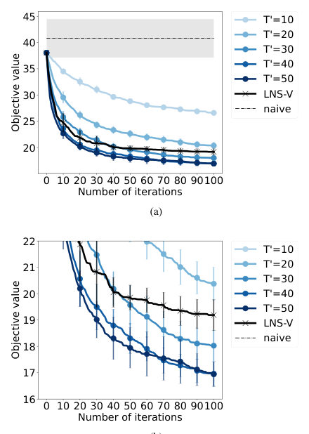


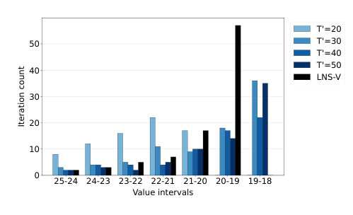
Summary. This paper addresses limitations in using Ising machines for large combinatorial problems by proposing $ ext{LNS-VT}$, a method that flexibly controls the size of subproblems solved during Large Neighborhood Search. By tuning the number of variables, the authors achieve significant performance gains over existing methods on VRP and QMKP benchmarks. The work emphasizes that controlling problem structure is as vital as ensuring mathematical feasibility.
Why it may be interesting. While focused on classical optimization, the reliance on Ising machines (which map to quantum annealing/computation) makes this highly relevant for understanding how heuristic solvers interact with quantum hardware constraints in complex physical modeling.
Main problem. Improving solution quality for large-scale, constrained combinatorial optimization problems like VRP and QMKP.
Main result. A novel LNS approach ($ ext{LNS-VT}$) that flexibly controls the subproblem size significantly outperforms existing methods by up to 10% on VRP benchmarks.
Method. The authors propose an Ising-machine-assisted Large Neighborhood Search (LNS) framework, specifically $ ext{LNS-VT}$, which adaptively tunes the number of variables in the subproblem solved at each step while maintaining feasibility.
Model / system. The problems are modeled using QUBO energy functions derived from combinatorial optimization objectives (VRP and QMKP). The core mechanism involves iteratively solving smaller, constrained subproblems using an Ising machine solver.
Key observables. Solution objective value improvement (e.g., 10% reduction in VRP), total profit for QMKP, and the number of binary variables used in the subproblem.
Important parameters / regimes. The 'number of consecutive steps re-optimized per vehicle' acts as a crucial control parameter determining the subproblem size; optimal settings vary with solution quality.
Assumptions / limitations. Feasibility preservation is necessary but insufficient; controlling the variable count in the subproblem is critical for performance on Ising machines.
Figures summary. Figure 8 shows that for QMKP, the highest total profit is achieved when the number of binary variables in the subproblem is maintained within a specific range (100 to 150).
Paper structure. The paper first defines the VRP and its QUBO formulation. It then introduces LNS-V and proposes the improved, tunable $ ext{LNS-VT}$ framework. Results are presented for both VRP and QMKP, demonstrating the necessity of subproblem size control.
Ising machines are heuristic solvers for combinatorial optimization, but their solution quality can degrade when large-scale constrained problems are solved directly. Ising-machine-assisted large neighborhood search (LNS) instead repeatedly updates a feasible current solution by solving smaller subproblems. An existing feasibility-preserving method for the vehicle routing problem (VRP) re-optimizes the entire routes of selected vehicles and thus cannot adjust the subproblem size finely. We propose LNS-VT, which introduces the number of consecutive steps re-optimized per vehicle as a parameter to control the subproblem size finely while preserving feasibility. For a 300-site, 5-vehicle VRP, its best setting reduced the objective value by approximately 10\% relative to the existing method after 100 iterations, and the appropriate setting changed with the current solution quality. Applying the same principle to the quadratic multiple knapsack problem, we confirmed that an appropriate subproblem size also exists, indicating that subproblem-size control is important in Ising-machine-assisted LNS.
Authors: Jong Yeon Lee
Type: theory · Category: quantum information and computing · PDF: https://arxiv.org/pdf/2607.05386v1
Analysis basis: full PDF text, analyzed in chunks
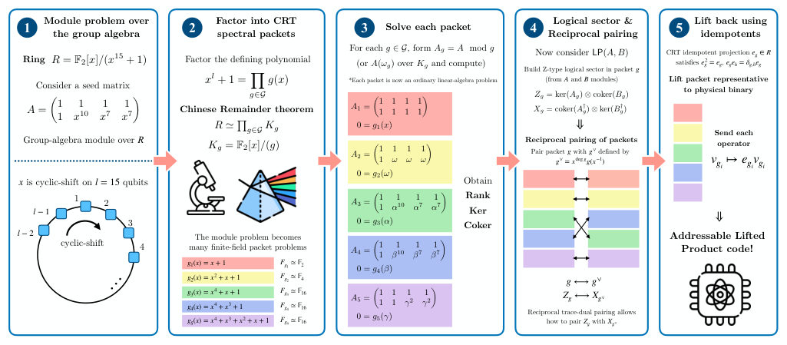


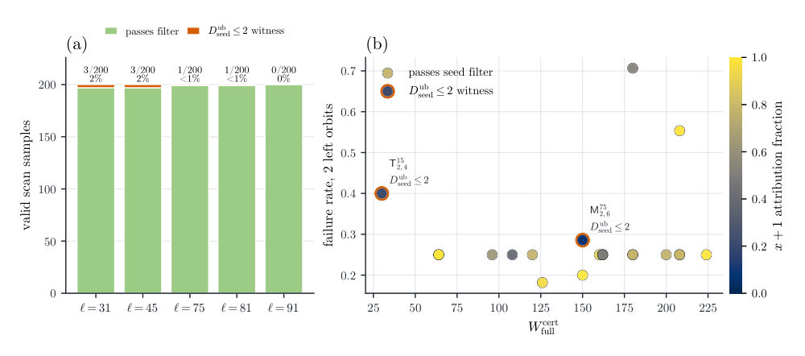
Summary. The paper introduces 'logical spectroscopy' as a novel technique to systematically construct and label usable conjugate logical bases for complex lifted-product qLDPC codes. By leveraging the Chinese Remainder Theorem, it replaces failing global algebraic reductions with independent finite-field computations across spectral packets. This provides crucial structural diagnostics necessary for building reliable quantum memory systems.
Why it may be interesting. This work provides a powerful algebraic framework for analyzing structured quantum codes, offering systematic diagnostics that go beyond simple dimension counting to certify the usability of logical qubits in fault-tolerant architectures.
Main problem. The primary challenge is developing a systematic method to construct and label explicit, addressable conjugate logical operators (X/Z pairs) for high-rate Abelian lifted-product quantum low-density parity-check (qLDPC) codes.
Main result. The authors introduce 'logical spectroscopy,' a spectral construction that replaces problematic global row reduction with finite-field computations via the Chinese Remainder Theorem, yielding a complete addressable conjugate logical basis.
Method. The method decomposes the group algebra using the CRT into spectral packets. Linear algebra is then performed independently within each packet to compute kernels and quotients, which are subsequently lifted back to define structured logical operators.
Model / system. The work focuses on quantum error-correcting codes, specifically quasi-cyclic qLDPC codes based on lifted-product (LP) constructions over group algebras $R = \mathbb{F}_2[x]/(x^l+1)$.
Key observables. Complete addressable conjugate logical basis; packet ranks showing sector splitting; certified upper bounds on basis width; and packet-attributed dimensions for erasure failures.
Important parameters / regimes. The construction is most robust when the lift group order is odd, allowing clean CRT decomposition into finite fields.
Assumptions / limitations. The construction relies on assumptions of bounded seed-shape and bounded group-basis-support. For the spectral method to apply cleanly, the lift group order must be odd.
Figures summary. Figures/Tables detail various diagnostic results, including sparse parity-systematic probes (S matrices), pivot optimization certificates ($ ext{W cert}^{ ext{full}}$), and exact fractions of one- and two-left-orbit erasure patterns ($ ho_{1 ext{orb}}, ho_{2 ext{orb}}$).
Paper structure. The paper develops the theory by first identifying the failure point (global row reduction over non-fields) and then proposing logical spectroscopy. This involves detailing the CRT decomposition, performing packet-wise linear algebra, pairing X/Z operators via reciprocal trace-duals, and finally presenting diagnostic tools derived from these packets.
Quantum LDPC memories can encode many logical qubits, but dimension alone does not make them usable: applications need explicit conjugate logical operators with structured labels and physical representatives. For hypergraph-product (HGP) codes this structure is transparent, since the input matrices are binary and can be row-reduced over $\mathbb{F}_2$. Abelian lifted-product codes are subtler. Their seed entries are shifts, or sparse sums of shifts, in a group-algebra ring rather than a field, so pivot blocks need not be invertible and global row reduction can fail. We address this with \emph{logical spectroscopy}, a spectral construction that replaces global row reduction by finite-field computations in the Frobenius character packets of the Abelian lift group. The Chinese remainder theorem (CRT) decomposes the group algebra into these packets. In each packet, we compute kernels, quotients, and product-complex homology; we then lift the resulting representatives back with CRT idempotents and pair $X$ and $Z$ logicals through reciprocal trace-dual packets. This gives complete addressable conjugate logical bases for finite Abelian lifted products $\mathsf{LP}(A,B)$. The same packet data also gives design diagnostics. Packet ranks show how logical sectors split, the lifted representatives give certified upper bounds on the width of the constructed conjugate basis, and whole-orbit erasures decompose into packet-attributed erased-logical dimensions. Thus, CRT packets also serve as working coordinates: they label logical sectors, certify the constructed basis width, and attribute structured erasure failures. Under bounded seed-shape and group-basis-support assumptions, this construction gives Abelian lifted-product qLDPC families an HGP-like feature while preserving the layout freedom of group-algebra lifts.
← Index · ← Previous · Next →